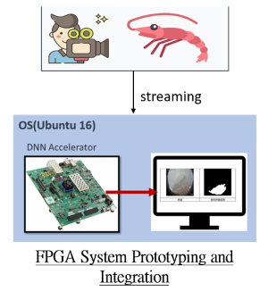
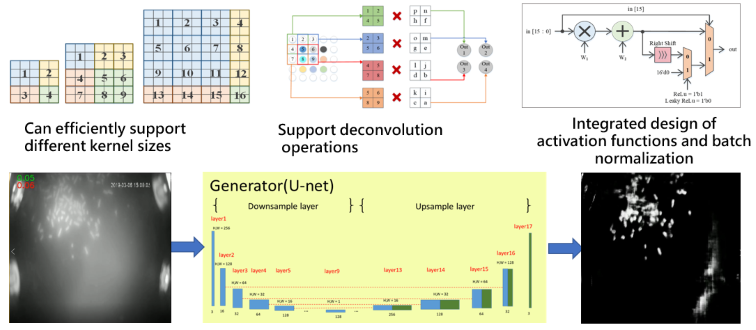

subProject 2
IC Design for Generative Adversarial Networks
 IMPORTANT TECHNOLOGY DEVELOPMENTS
1.利用GAN與圖像分割技術結合，進行蝦子飼料辨識。
2.輸出為黑白二值化圖，飼料區域以白色標記。
3.Generator為Unet架構，內含有特徵擷取重用連結，以提升辨識度。
4.由養殖場傳送串流影片至FPGA(內含linux系統)，利用神經網路加速器辨識飼料。
5.支援卷積神經網路(CNN)及生成對抗網路(GAN)
6.可動態調整卷積核尺寸大小(filter size)、步長(Stride)以及激勵函數
7.支援Batch Normalization
8.高硬體使用率